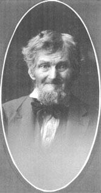
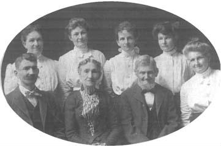
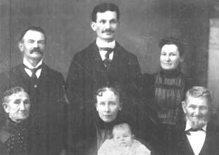
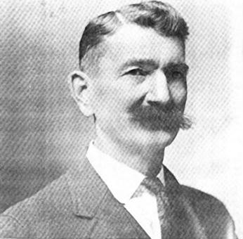

| Follow the above link to the main page for this topic or click the graphic below to visit the Homepage. |
 | Photo Gallery: Seth Cullen and Family The Cullen Family History Collection |
 |
Many thanks to Jean Scherer of Toledo, Ohio for making this photo page possible. The dates for these photos are not certain but are very likely from shortly after the turn of the century. This photo of Seth Cullen is especially interesting in that it is a spitting image of my own grandfather! Further, Seth's son William H. Cullen (shown in the next photo and in the bottom photo), could easily pass as my father! These same photos were sent to related families in Ireland and the report comes back that there are definite similiarities. The old family saying "all us Cullens look alike" must be true since the common Irish ancestors are not found until one traces back to about 1560 in Co. Wexford! Back Button to Return. |
 |
Seth and Susan Cullen including most of their children. Front row: William H. Cullen (only son); Susan Cullen; Seth Cullen. Daughters along back row: 2'nd - Helen Gasser; 3'rd - Ava Mead; 4'th - Leora Betts; 1'st & 5'th - Lottie Halter and Ava Hullinger, which is which is not known for sure. Back Button to Return. |
 |
This photo was taken in Oct or Nov of 1898. Lower left; Susan Cullen. Lower right; Seth Cullen. Top right; Helen (Cullen) Gasser, daughter of Seth and Susan. Top left; James P. Gasser, husband of Helen. Top center; Dorr I. Gasser, son of James and Helen Gasser. Lower center; Ida May (Bliss), wife of Dorr Gasser. Baby; Mary Helen Gasser, daughter of Dorr and Ida. Mary Helen (1898-2000), matriarch of the current family, passed away in March at the age of 101, having lived a full life that touched three centuries. Back Button to Return. |
 |
This photo is from a history of Paulding Co., Ohio. William H. Cullen, son of Seth Cullen, was a prominent businessman of Paulding, Ohio. He ran a dry goods store in the town square, was a partner in the Cullen, Richards & Savercool insurance agency, sold Dodge automobiles at the Armory Garage with his son Seth, served four terms as postmaster, laid out the Cullen's addition at the north end of town, and started the Paulding-Ft. Wayne Bus Line. Back Button to Return. |